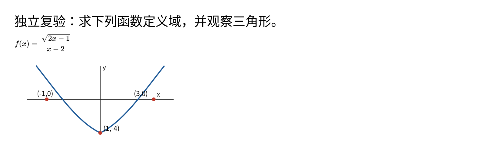
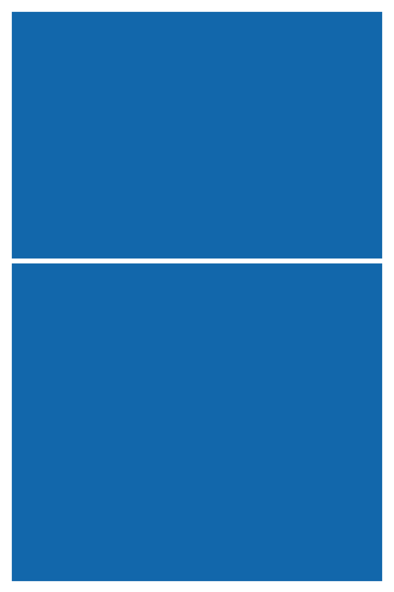

<!doctype html><meta charset="utf-8"><title>R35 local4 原PNG白底查看</title><style>body{margin:0;background:#eee;font:16px sans-serif}figure{margin:20px;width:1600px}figcaption{padding:8px}img{display:block;background:white;width:1600px;height:auto}</style><figure><figcaption>long-0，原PNG按1600px宽显示，白底只属于浏览器查看层</figcaption></figure><figure><figcaption>long-1，原PNG按1600px宽显示，白底只属于浏览器查看层</figcaption></figure><figure><figcaption>long-2，原PNG按1600px宽显示，白底只属于浏览器查看层</figcaption></figure><figure><figcaption>math-figure-0，原PNG按1600px宽显示，白底只属于浏览器查看层</figcaption></figure><figure><figcaption>figure-only-0，原PNG按1600px宽显示，白底只属于浏览器查看层</figcaption></figure><figure><figcaption>math-with-answer-1，原PNG按1600px宽显示，白底只属于浏览器查看层</figcaption></figure><figure><figcaption>boundary-2400-0，原PNG按1600px宽显示，白底只属于浏览器查看层</figcaption></figure><figure><figcaption>tall-figure-png-0，原PNG按1600px宽显示，白底只属于浏览器查看层</figcaption></figure>